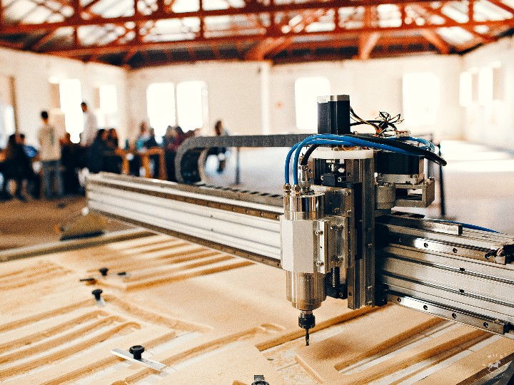
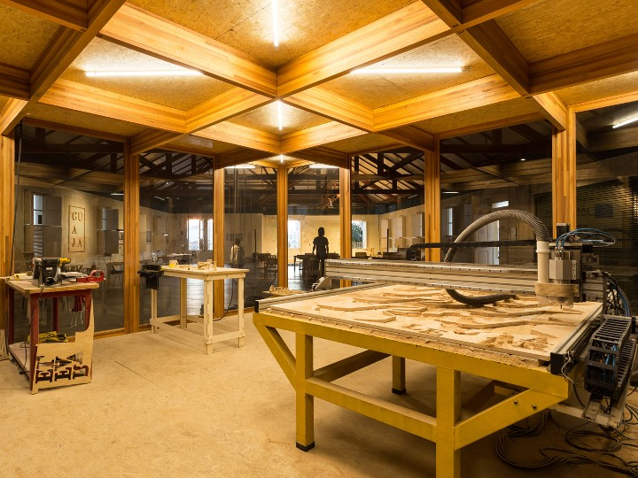
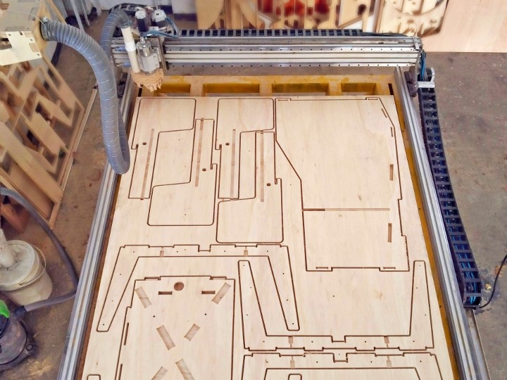

Throughout the years I have been building several CNC machines. I dit it mostly because I really enjoy making automated machines and robots,
and also because I wanted to be able to produce high quality parts in a fast and cost-effective way.
CNC stands for Computer Numerical Control, and it is basically an automated machine controlled by a dedicated computer to perform manufacturing operations.
Plywood CNC
Developed a CNC machine suited for cutting an entire plywood sheet (2200x 1600 mm).
This machine was developed with the intention of providing precision manufacturing services.
Year: 2015
Working volume: 2200 x 1600 x 140 mm
Tools: Rhinoceros 3D, Solidworks, LinuxCNC
- 
- 
- 
-

-